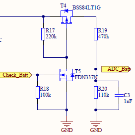

Battery Measurement Using Voltage Divider
Measurement Technique
This document provides a general information about measuring battery using voltage divider on one of the ADC input. The voltage from the battery is first feed into voltage divider and then feed into one of the ADC input(AIN#) because typically the voltage range of battery is high i.e. 3V - 7V and maximum allowable at ADC input is VDD+0.3V.

Measurement Formulae
ADC can be configured using different reference voltage and gain settings. In our case we use reference voltage = VDD/4 where VDD is 3.3V , so our reference voltage = 0.825V and gain = 1/5. Details about reference voltage and gain can be found in the nrf52832 product specification guide. Below are some of the important formulae and measurements using our settings:
-
The voltage out of the voltage divider is
VBATT* R20/(R19+R20). e.g voltage provide by battery is 5.2V, so voltage after voltage divider will be
5.2V*110/(470+110) = 0.986V
*ADC value can be calculated using the voltage value from voltage divider as follows:
ADC VALUE = V * GAIN/REFERENCE * 2^RESOLUTION, where V is voltage after voltage divider
ADC VALUE = 0.986 * (1/5)/0.825 * 2^10 = 244.767, where our resolution is 10 bits